Model Context Protocol server for GOAT Network — the BitVM-based Bitcoin L2. Exposes EVM-compatible JSON-RPC as 16 MCP tools so any AI agent can read chain state, query balances and contracts, fetch logs, and broadcast signed transactions.
| Network | Chain ID | RPC | Explorer |
|---|---|---|---|
| Alpha Mainnet | 2345 | rpc.goat.network |
explorer |
| Testnet3 | 48816 | rpc.testnet3.goat.network |
explorer |
| Localnet | any | GOAT_RPC_URL=… |
— |
npm install -g @purplesquirrel/goat-network-mcp{
"mcpServers": {
"goat-network": {
"command": "npx",
"args": ["-y", "@purplesquirrel/goat-network-mcp"],
"env": { "GOAT_NETWORK": "mainnet" }
}
}
}get_chain_infoget_blockget_block_by_hashget_gas_priceget_fee_historyget_balanceget_transaction_countget_codeget_storage_atget_transactionget_transaction_receiptsend_raw_transactioneth_callestimate_gasget_logsexplorer_linkbuild_transactionencode_function_datadecode_function_datadecode_event_logsimulate_transactionbuild_erc20_transferbuild_erc20_approvebuild_contract_writesystem_contractsbridge_deposit_op_returnbridge_deposit_statusbridge_withdrawal_statusbridge_paramsbuild_bridge_withdrawbuild_bridge_rbfbuild_bridge_cancelbuild_bridge_refund| Network | Tools passing | Result |
|---|---|---|
| mainnet | 29 / 33 (+4 skip) | all green |
| testnet3 | 30 / 33 (+3 skip) | all green |
| localnet (anvil) | 26 / 33 (+7 skip) | all green |